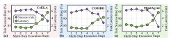

RESEARCH QUESTION
Why can't Bob just keep going without re-planning?

Fig. 15 measures execution-length sensitivity, not the isolated effect of self-reflection. The best horizon is workload-dependent.
THE TRADE-OFF
Too short
Frequent LLM planning
Too long
Accumulated trajectory errors
RECA'S APPROACH
Pre-deployment
Sweep execution horizons
Runtime
Self-reflection & re-planning